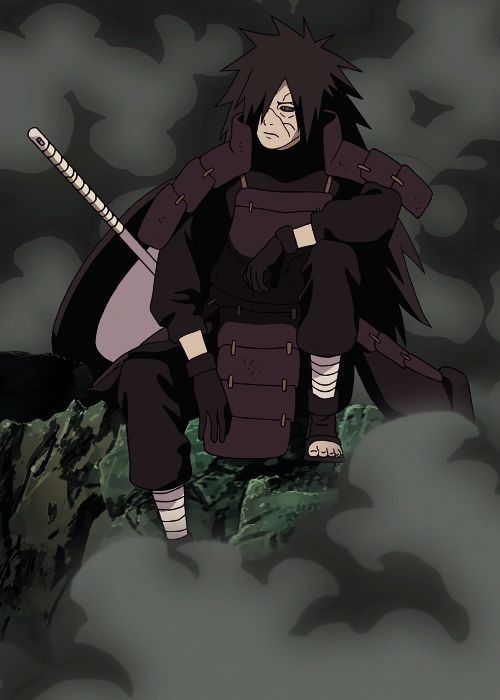
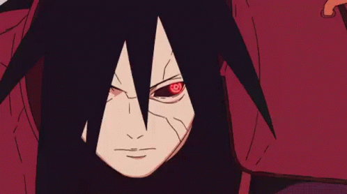
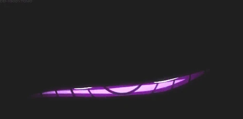
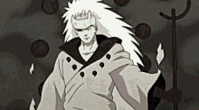

ABOUT
Uchiha Madara was the legendary leader of the Uchiha clan. Madara and his siblings grew up on the
battlefield waging constant war with the Uchiha's rivals
After his return from death and various enhancements, Madara was able to decisively defeat thousands of
shinobi,
the Five Kage, and the nine tailed beasts, all at once respectively.Madara was also confident if he had
senjutsu
chakra, he would have been able to defeat Obito while the latter was the Ten-Tails' jinchūriki.
Madara's years of experience on the battlefield honed his strategic ingenuity. He could quickly devise a number of approaches and could switch approaches immediately. The longer he spent against a particular opponent, the less he needed backup tactics, as he could eventually predict what they would do and identify literal or psychological weaknesses to exploit. He could form and verify any theories he comes up with using small details.
Madara was 90 at his death
Chakra and Physical Prowess
Madara was one of the most powerful shinobi in history, recognised as the strongest Uchiha in his
lifetime
and for decades after his death.He was born with very powerful chakra and incredibly skilled in
taijutsu, ninjutsu, bukijutsu, dōjutsu.
His large chakra reserves allowed him to fight nonstop for twenty-four hours before collapsing and in
his
old age, summon the Demonic Statue of the Outer Path from its cage in the moon.His chakra control could
perform complicated techniques with a single hand seal. He could also quickly absorb and synchronise
senjutsu chakra with his own and therefore enter Sage Mode, despite having no prior training in
senjutsu.


Having awakened both his Mangekyō, Madara could use Susanoo, which he could use even without his eyes in their sockets. His Susanoo wielded two to four undulating blades that could be thrown and controlled remotely.When fully produced, Madara would hover inside Susanoo to grant him a greater range of movement.

With the Rinnegan, Madara could use all of the abilities of the Six Paths Technique. with Rinnegan and Sharingan, Madara could summon meteorites to cause widespread destruction. While Madara was in Sage Mode and further boosted by Kurama's chakra, this shadow was powerful enough to knock down the tailed beasts. Madara could produce at least four shadows to aid him

As the Ten-Tails' jinchūriki and with both of his Rinnegan, Madara approached the moon and awakened a Rinne Sharingan on his forehead, which he could use to reflect the eye onto the moon, allowing him to cast the Infinite Tsukuyomi and trap everyone beside himself in genjutsu.